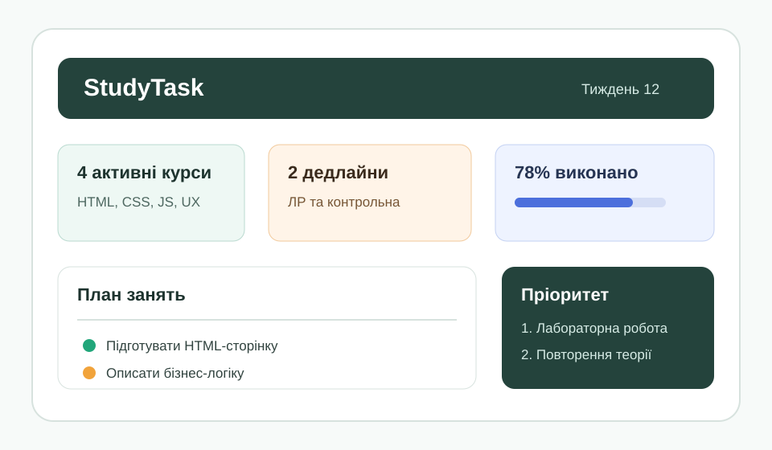

4 активні дисципліни
HTML, CSS, JavaScript та UX-проєктування мають відкриті задачі цього тижня.
StudyTask допомагає студенту бачити активні дисципліни, дедлайни, пріоритети та етапи виконання лабораторних робіт в одному інтерфейсі.

HTML, CSS, JavaScript та UX-проєктування мають відкриті задачі цього тижня.
Система виділяє завдання з найближчою датою здачі та високим пріоритетом.
Прогрес розраховується за кількістю завершених підзадач у межах тижня.
Таблиця демонструє базову структуру майбутнього застосунку: дисципліна, завдання, дедлайн, статус і пріоритет.
| Дисципліна | Завдання | Дедлайн | Статус | Пріоритет |
|---|---|---|---|---|
| Основи клієнтських розробок | ЛР №1: семантична HTML-сторінка | у роботі | Високий | |
| Проєктування інтерфейсів | Ескіз головної сторінки | очікує | Середній | |
| JavaScript | Повторення функцій та об'єктів | заплановано | Середній |
Цей блок демонструє стильове оформлення елементів за допомогою селекторів тегу, класу, ідентифікатора та комбінованих CSS-селекторів.
Теги h2, p і table отримують базові шрифти, колір, відступи й читабельну структуру.
Класи .selector-card, .accent-card і .tag створюють повторювані компоненти інтерфейсу.
Елемент з data-state="active" отримує окремий контур і фон без додаткового класу.
| Селектор | Приклад |
|---|---|
| Тег | h2 |
| Клас | .selector-card |
| ID | #css-showcase |